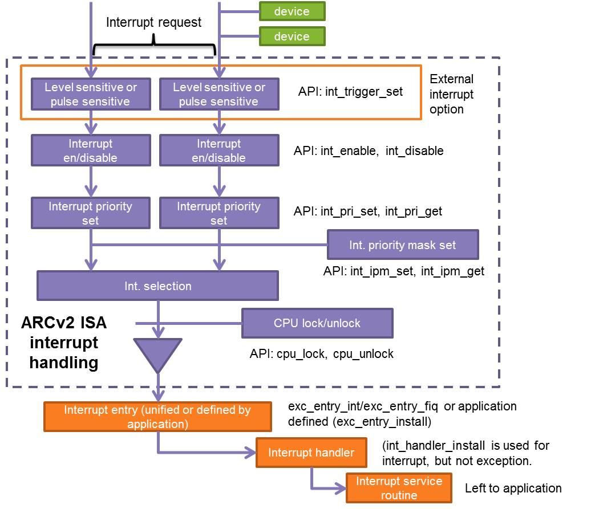

ARC Processors¶
Overview¶
The ARC Hardware Abstraction Layer (HAL) provides hardware abstraction for DesignWare® ARC® processors. In this layer, the following functions are provided:
- Start up: common startup routines or templates to handle necessary initializations after power on, reset, and so on.
- Exception and interrupt management: a standard exception and interrupt processing model and related resource definitions.
- Unified intrinsic/built-in functions: covering both the MetaWare and GNU toolchains.
- Unified resource definitions: registers, data types, macros, and so on.
- Access to the resources: internal timers, cache, auxiliary registers, and build configuration registers.
Start up in embARC OSP¶
The start up in embARC OSP can be divided into two parts:
Processor level start up¶
The processor level start up process is implemented in arc_startup.s. The
program jumps to the board_main() function after the startup process,
which runs in three stages:
- Stage 1: Hardware Initialization
- Initialize necessayr status and registers.
- Initialize system clock (if necessary, in user defined
hardware_init_hook). - Initialize memory controller (if necessary, in user defined
hardware_init_hook).
- Stage 2: C Run-time Initialization
- Initialize the stack.
- Copy section, e.g. data section, text section if necessary.
- Clear Block Started by Symbol (BSS) section.
- Stage 3: Go to
board_main()- Early initialization of software (if necessary, in user defined
software_init_hook). - Call arc_exc_init, or other initialization functions.
- Jump to
board_main()function.
- Early initialization of software (if necessary, in user defined
Board level start up¶
The board level start up process is implemented board.c with an entry of board_main.
The following pre-defined work is done in board_main function:
- board-level hardware initialization in
board_init - Middleware initialization
- initialize the
xprintffunction to have a console output - initialize the FatFs and mount the sd card if
MID_FATFSis enabled - initialize NT-Shel if
MID_NTSHELLis enabled
- initialize the
- OS specific initialization if
ENABLE_OSis defined- create main task for user
mainfunction - create WiFi task if ·
MID_LWIPis enabled and WiFi module is used
- create main task for user
- jump to
mainfunction.
Note
User can undefine the macro EMBARC_USE_BOARD_MAIN to bypass the pre-defined board-level initialization and do customized initialization.
Exceptions and Interrupts Management¶
ARC exceptions and interrupts¶
DesignWare® ARC® processors are designed to allow exceptions to be taken and handled by interrupt service routines in user or kernel mode. All exceptions and interrupts cause an immediate switch into kernel mode. Interrupts are disabled on entry to an exception handler.
Exceptions can be divided into two types: CPU exceptions and interrupt exceptions. CPU exceptions are triggered by errors such as illegal instructions, invalid or illegal memory accesses, and protection violations. Most CPU exceptions are synchronous. Interrupt exceptions are triggered by device interrupts and are always asynchronous.
Exception vectors are fetched in the instruction space (ICCM or main memory,
but not DCCM) with an alignment 1024 bytes. Every exception contains the
following information:
- Vector Name is a symbolic equivalent of the vector number.
- Vector Number is a unique eight-bit index in the exception or interrupt vector table. Vector Offset is an offset value calculated as four times the vector number (vector offset = 4*vector_number), which is used to determine the position of the appropriate exception or interrupt service routine.
- Cause Code is an eight-bit number to identify the exact cause of an exception.
- Parameter is an eight-bit field to pass a single parameter from the exception to the exception handler and identify exceptions with the same cause code.
For more details, see the ARCv2 ISA Programmer's Reference Manual (PRM).
Exception and interrupt processing framework¶
A basic exception and interrupt processing framework is implemented in embARC OSP. Through this framework, you can handle specific exceptions or interrupts by installing the desired handlers. This can help you analyze the underlying details of saving and operating registers.
For CPU exceptions and interrupts, entry(exc_entry_cpu for CPU exception, exc_entry_int for interrupts) is called first, then handler is
called in entry. You can define your own entry using exc_entry_install.
A standard interrupt processing model is shown in the picture below.
In this model, interrupts have the following features:
- Devices request interrupts through their own interrupt vectors and they can share the same interrupt vectors.
- An interrupt can be level-sensitive or pulse-sensitive.
- An interrupt can be enabled (unmasked) and disabled (masked).
- The priority of each interrupt can be programmed by software.
- Interrupt priority order is from INT_PRI_HIGH (highest, -1 default) to INT_PRI_MIN (lowest, -2 default).
- CPU lock and unlock are used to disable and enable interrupt processing.
For most Real-Time Operating Systems (RTOS), the task/process/thread priority is a positive number and starts from 1 (the highest priority).
Negative numbers are used to define a unified priority scheme in embARC. Priority 0 (highest priority) is always assigned to the OS scheduler. A higher-priority task can preempt a lower-priority task. The OS scheduler can preempt any other tasks. But interrupt handling tasks with negative numbers cannot be scheduled or switched by the OS scheduler.
See arc_exception.h for further details.
Built-In Functions¶
Compiler built-in functions are used to invoke certain processor operations without writing assembly code. In embARC OSP, a series of built-in functions are provided for both the MetaWare and GNU toolchains.
See arc_builtin.h for further details.
Resource Definitions¶
The structure of resource definitions is architecture->series->processor->board.
arc.h includes the common resource definitions for the DesignWare® ARC® processors,
such as macros for exceptions and auxiliary register access.
arc_em.h includes the common resource definitions for ARC EM Processors.
Access to Resources¶
Internal timers¶
DesignWare® ARC® processors have two independent 32-bit timers and a 64-bit real-time counter (RTC). Timer 0 and Timer 1 are identical in operation. The only difference is that these timers are connected to different interrupts. Each timer is optional with a fixed interrupt: interrupt 16 for timer 0 and interrupt 17 for timer 1.
The internal timers are connected to a system clock signal that always runs even when the ARC EM processor is in the SLEEP state. The timers can be used to generate interrupt signals that wake the processor from the SLEEP state. The processor timers automatically reset and restart after reaching the limit value. The processor timers can be programmed to count the clock cycles only if the processor is not halted. The processor timers can also be programmed to generate an interrupt or a system reset if they reach the limit value. The 64-bit RTC cannot generate any interrupts. This timer is used to count the clock cycles automatically.
embARC OSP provides interfaces for internal timers such as start, stop, poll, and read.
See arc_timer.h for further details
Caches¶
DesignWare® ARC® processors can be configured with both data cache (dcache) and instruction cache (icache). The cache configuration can be selected as desired. The cache can be controlled through specific auxiliary registers.
embARC provides unified interfaces to enable/disable, flush, invalidate, lock, and unlock cache lines and to access cache-internal RAM.
See arc_cache.h for further details.
uDMA¶
The DMA controller is an optional high performance, low area/energy consumption DMA engine for use in the ARC EM 2.0 cores.
The DMA controller supports the following features:
- 1 to 16 independent programmable DMA channels (number of channels is configurable)
- User-programmable prioritization scheme for all available channels
- Concurrent operation with the CPU
- Software/Hardware–triggered DMA transfers
- Two addressing modes
- Five data transfer modes (configurable down to one)
- Internal and external interrupt support
MPU¶
The ARCv2-based Memory Protection Unit (MPU) provides protection by dividing the address space into regions associated with specific attributes such as Read, Write, and Execute. If an attempt is made to access a region for which an associated attribute is not permitted, the ARCv2-based processors raises a Protection Violation exception, and this exception prevents the faulting instruction from completing.
See arc_mpu.h for further details